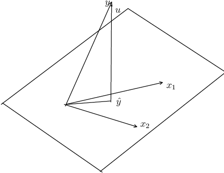

Call:
lm(formula = mpg ~ disp + hp + wt, data = mtcars)
Residuals:
Min 1Q Median 3Q Max
-3.891 -1.640 -0.172 1.061 5.861
Coefficients:
Estimate Std. Error t value Pr(>|t|)
(Intercept) 37.105505 2.110815 17.579 < 2e-16 ***
disp -0.000937 0.010350 -0.091 0.92851
hp -0.031157 0.011436 -2.724 0.01097 *
wt -3.800891 1.066191 -3.565 0.00133 **
---
Signif. codes: 0 '***' 0.001 '**' 0.01 '*' 0.05 '.' 0.1 ' ' 1
Residual standard error: 2.639 on 28 degrees of freedom
Multiple R-squared: 0.8268, Adjusted R-squared: 0.8083
F-statistic: 44.57 on 3 and 28 DF, p-value: 8.65e-111 OLS
A linear model with \(n\) observations and \(k\) regressors can be written as (in vector forms) \[ {\symbf{y=X\beta+u }} \tag{1.1}\]
The idea of least-squares is to choose \(\beta\) to minimize the residual sum of squares (\(SSR\)),
\[ SSR(\beta) = {\symbf{(y-X\beta)'(y-X\beta) = y'y-2\beta'X'y+\beta'X'X\beta }} \tag{1.2}\]
The first-order condition to minimize \(SSR\) are: \[ \frac{\partial (SSR)}{\partial \beta} = {\symbf{-2X'y+2X'X\beta=0}} \tag{1.3}\]
This generates the so-called normal equations \[{\symbf{(X'X)\beta=X'y}} \tag{1.4}\]
Therefore, Ordinary Least Squares (OLS) estimator of \(\beta\) is \[{\symbf{\hat \beta=(X'X)^{-1}X'y}} \tag{1.5}\]
1.1 Fitness of OLS
We can see \(y\) vector as the part explained by the regression and the unexplained (residual) part, \[ {\symbf{y=\hat y+\hat u=X\hat\beta+\hat u}} \tag{1.6}\] where \(\hat u\) is the OLS residual. Because the residual is orthogonal to the fitted values, \({\symbf{\hat y' \hat u=0}}\), so the cross term drops: \[{\symbf{y'y=(\hat y+\hat u)'(\hat y +\hat u)=\hat y' \hat y +\hat u'\hat u=\hat\beta'X'X\hat\beta +\hat u'\hat u }} \tag{1.7}\]
Subtracting \(n\bar y^2\) (\(\bar y\) is the sample mean) from both sides, and assuming the regression includes an intercept (so that \(\bar{\hat y}=\bar y\) and the residuals sum to zero, which is what makes this centered decomposition and the \(R^2\) interpretation below hold), \[ {\symbf{y'y-n\bar y^2=(\hat\beta'X'X\hat\beta-n\bar y^2) +\hat u'\hat u }} \tag{1.8}\]
We decompose the total sum of squares into two parts: sum of squares due to error (noise), and sum of squares explained by the linear regression.
The \(R^2\) is defined by \[R^2=1-\frac{SSR}{SST} \tag{1.9}\]
\(SST\) is the total (centered) sum of squares of \(y\), \({\symbf{y'y-n\bar y^2 = \sum_t (y_t-\bar y)^2}}\).
\(R^2\) is simply the proportion of the variation of \(Y\) that can be attributed to the variation of \(X\). \(R^2\), however, will never decrease with the addition of any variable to the set of regressors. \(R^2\) stays exactly the same only in the knife-edge case that the added variable is orthogonal to the current residuals; in practice it always rises a little, even for an irrelevant variable. The adjusted \(R^2\), however, takes account of the addition of any new regressors:
\[\bar R^2=1-\frac{SSR/(n-k)}{SST/(n-1)} \tag{1.10}\]
1.2 Example
Let’s look at an example of OLS of car’s mpg on disp, hp and wt.
1.3 The Geometry of Least Squares

For simplicity, let’s assume there are two explanatory variables \(x_1\) and \(x_2\). \(x_1\) and \(x_2\) form a plane. What OLS does is to project \(y\) onto this plane.
In mathematical terms, all linear combinations of these two vectors define a two-dimensional subspace of Euclidean space \({{\symbf{E}}}^n\). This is called the column space of \({\symbf{X}}\). The least-square principle is to choose \(\beta\) to make \(\hat y\), which belongs to the subspace of \({\symbf{X}}\), as close as possible to \(y\).
When we estimate a linear regression model, we map the \(y\) into a vector of fitted values \({\symbf{X \hat \beta}}\) and a vector of residuals \({\symbf{\hat u =y-X \hat \beta}}\). Geometrically, these are examples of orthogonal projections. A projection is a mapping that takes each point of \({{\symbf{E}}}^n\) into a point in a subspace of \({{\symbf{E}}}^n\). An orthogonal projection maps any point into the point of the subspace that is closest to it.
An orthogonal projection can be performed by premultiplying the vector to be projected by a projection matrix. In the case of OLS, the two projection matrices that yield the vector of fitted values and the vector of residuals, are \[{\symbf{P_X = X(X'X)^{-1}X' }} \tag{1.11}\] \[{\symbf{M_X = I-P_X = I- X(X'X)^{-1}X'}} \tag{1.12}\]
From this, we see that the effects of two projection matrices. \[{\symbf{P_X y = X \hat \beta =\hat y }} \tag{1.13}\] \[{\symbf{M_X y = (I-P_X)y = y- P_X y = y-X \hat \beta =\hat u }} \tag{1.14}\]
That is, \({\symbf{P_X y}}\) projects \({\symbf{y}}\) onto \({\symbf{X}}\) and makes it \({\symbf{\hat y}}\); \({\symbf{M_X y}}\) makes it \({\symbf{\hat u}}\).
In the picture, that corresponds to the fact that the projection of \({\symbf{y}}\) onto the plane of \({\symbf{X}}\) creates two parts: \({\symbf{\hat y}}\) and \({\symbf{\hat u}}\).
1.4 OLS as Conditional Expectation
The derivation above shows how to compute \({\symbf{\hat\beta}}\) from a sample. We now ask a different question: what does OLS estimate at the population level?
1.4.1 The Conditional Expectation Function
For a random pair \((Y, X)\), the conditional expectation function (CEF) is \(E[Y \mid X]\), a function of \(X\) alone. Any random variable \(Y\) can be decomposed as \[Y = E[Y \mid X] + \varepsilon, \qquad E[\varepsilon \mid X] = 0. \tag{1.15}\]
This is not an assumption; it is a definition. The residual \(\varepsilon = Y - E[Y \mid X]\) is mean-independent of \(X\) by the construction of conditional expectation.
The CEF has an optimality property: among all functions \(g(X)\), \(E[Y \mid X]\) minimizes the mean squared prediction error, \[E[Y \mid X] = \arg\min_{g}\; E\bigl[(Y - g(X))^2\bigr]. \tag{1.16}\]
That is, if we could use any function of \(X\) to predict \(Y\), the CEF would be the best predictor in the mean squared error sense. The proof follows from the decomposition above: for any \(g\), \[E\bigl[(Y-g(X))^2\bigr] = E\bigl[(Y - E[Y\mid X])^2\bigr] + E\bigl[(E[Y\mid X] - g(X))^2\bigr] + 2\,E\bigl[\varepsilon\,(E[Y\mid X]-g(X))\bigr]. \tag{1.17}\]
The cross term vanishes by iterated expectations: \(E[Y\mid X]-g(X)\) is a function of \(X\), so \(E\bigl[\varepsilon\,(E[Y\mid X]-g(X))\bigr] = E\bigl[E[\varepsilon\mid X]\,(E[Y\mid X]-g(X))\bigr] = 0\). The first term does not depend on \(g\), and the second is nonnegative and equals zero when \(g = E[Y\mid X]\).
1.4.2 The Best Linear Predictor
In practice we rarely know the CEF, and we often restrict attention to linear predictors. The best linear predictor (BLP) of \(Y\) given \(X\) is the coefficient vector \(\beta\) that solves \[\beta = \arg\min_{b}\; E\bigl[(Y - X'b)^2\bigr]. \tag{1.18}\]
Taking the first-order condition, \[\frac{\partial}{\partial b}\, E\bigl[(Y - X'b)^2\bigr] = -2\, E\bigl[X(Y - X'b)\bigr] = 0, \tag{1.19}\]
which gives the population normal equation \[E[XX']\,\beta = E[XY]. \tag{1.20}\]
If \(E[XX']\) is nonsingular, the BLP coefficient is \[\beta = \bigl(E[XX']\bigr)^{-1}\, E[XY]. \tag{1.21}\]
This is the population analog of the sample formula \({\symbf{\hat\beta = (X'X)^{-1}X'y}}\). The population version replaces sample cross-products with their expectations.
The first-order condition can equivalently be written as the population orthogonality condition: \[E\bigl[X(Y - X'\beta)\bigr] = 0. \tag{1.22}\]
This says that the linear prediction error \(Y - X'\beta\) is uncorrelated with every component of \(X\). It is the population version of the sample condition \({\symbf{X'\hat u = 0}}\) that we derived from the matrix normal equations.
1.4.3 The BLP Approximates the CEF
The BLP and the CEF are connected by a key result: the BLP is the best linear approximation to the CEF. To see this, write \[\beta = \bigl(E[XX']\bigr)^{-1}\, E[XY] = \bigl(E[XX']\bigr)^{-1}\, E\bigl[X\, E[Y \mid X]\bigr], \tag{1.23}\]
where the second equality uses the law of iterated expectations. The BLP coefficient depends on \(Y\) only through the CEF. OLS is fitting a linear function to the CEF, not directly to \(Y\).
When the CEF is linear in \(X\) — that is, \(E[Y \mid X] = X'\beta\) for some \(\beta\) — the BLP recovers the CEF exactly. The linear model is correctly specified and OLS estimates the true conditional expectation.
When the CEF is nonlinear, the BLP still provides the minimum mean squared error linear approximation to it. The OLS coefficient retains a well-defined interpretation: it is the slope of the best linear predictor, even if the world is nonlinear. This is why OLS remains useful in settings where the true CEF is unknown and possibly complicated.
1.4.4 From Population to Sample
The population formulas become sample formulas when we replace expectations with sample averages. For a sample of \(n\) observations, \[E[XX'] \approx \frac{1}{n} \sum_{i=1}^n X_i X_i' = \frac{1}{n}\, {\symbf{X'X}} \tag{1.24}\]
\[E[XY] \approx \frac{1}{n} \sum_{i=1}^n X_i Y_i = \frac{1}{n}\, {\symbf{X'y}} \tag{1.25}\]
Substituting into the population BLP formula gives \[{\symbf{\hat\beta}} = \left(\frac{1}{n}\,{\symbf{X'X}}\right)^{-1} \frac{1}{n}\,{\symbf{X'y}} = {\symbf{(X'X)^{-1}X'y}}, \tag{1.26}\]
which is the OLS estimator derived from the matrix normal equations. The \(1/n\) factors cancel. This shows what OLS does: it uses sample analogs to estimate the population BLP, which is the best linear approximation to the conditional expectation function \(E[Y \mid X]\).
1.5 Properties of OLS estimator
1.5.1 Unbiasedness
In a linear model \[ {\symbf{y=X\beta+u, }} \tag{1.27}\] the OLS estimator is \[ {\symbf{\hat \beta=(X'X)^{-1}X'y }} \tag{1.28}\]
Since \({\symbf{y=X \beta+u}}\),
\[ {\symbf{\hat \beta=\beta + (X'X)^{-1}X'u. }} \tag{1.29}\]
This makes \[ {{\mathrm{E}}} {\symbf{(\hat \beta | X)=\beta + (X'X)^{-1}X'{E} (u|X). }} \tag{1.30}\]
The condition that makes the OLS estimator unbiased is: \[ {{\mathrm{E}}} {\symbf{(u|X)=0, }} \tag{1.31}\]
that is, all explanatory variables which form the columns of \({\symbf{X}}\) are exogenous. This condition is weaker than the independence condition that \(u\) and \(X\) are independent. This says that given \({\symbf{X}}\), the expected value of \({\symbf{u}}\) is zero; it implies that the model is correctly specified. That is, \({\symbf{y}}\) is a linear function of \({\symbf{X}}\).
In the context of cross-sectional data, this assumption is plausible. However, when we have time series data, the assumption becomes strong, because it assumes that the entire series of \({\symbf{X}}\) has no relationship with the error term. In a time series context, this is hard to satisfy. The OLS estimator is biased if this condition is not satisfied.
For example, suppose we have a model
\[ y_t = \beta_1 + \beta_2 y_{t-1} + u_t, \quad u_t \sim {{\mathrm{IID}}} (0, \sigma^2). \tag{1.32}\]
In this simple model, even if we assume that \(y_{t-1}\) and \(u_t\) are uncorrelated, OLS estimator is still biased. That is because \({{\mathrm{E}}} {\symbf{(u|X)=0}}\) is not satisfied: \(y_{t-1}\) depends on \(u_{t-1}\), \(u_{t-2}\) and so on.
There is a weaker condition – weaker than the strict exogeneity above, and in fact the weakest of the conditions in this chapter: \[ {{\mathrm{E}}} {\symbf{(X u)=0, }} \tag{1.33}\]
Once we know that the model is correctly specified, then this equation can be used to derive results, such as GMM estimators.
1.5.2 Consistency
For OLS estimator to be consistent, a much weaker condition is needed: \[ {{\mathrm{E}}} (u_t|X_t)=0, \tag{1.34}\]
This condition is much weaker since it only assumes that the mean of current error term does not depend on the current predictors. Even a model with lagged dependent variable can easily satisfy this condition. This condition is called contemporaneous exogeneity. It is the weakest of three exogeneity conditions worth keeping apart, which is precisely why it is the one to invoke for consistency:
- Strict exogeneity, \(E[u_t \mid X_1, \dots, X_n]=0\): the error in every period is mean-independent of the regressors in every period. This is what unbiasedness requires, and what the lagged-dependent-variable example above violates.
- Predeterminedness, \(E[u_t \mid \mathcal F_{t-1}]=0\) with \(X_t\) measurable with respect to \(\mathcal F_{t-1}\) – equivalently, \(X_t\) is orthogonal to the current and all future errors, while being allowed to correlate with past errors. This is the relevant condition in models with a lagged dependent variable.
- Contemporaneous exogeneity, \(E[u_t \mid X_t]=0\).
- Contemporaneous orthogonality, \(E[X_t u_t]=0\) – mere zero correlation. This is weakest of all, and it is what consistency actually needs: together with a rank condition and a law of large numbers it gives \(\mathrm{plim}\, n^{-1}{\symbf{X'u = 0}}\) and hence \(\mathrm{plim}\, \hat\beta = \beta\). Contemporaneous exogeneity is a strictly stronger, sufficient condition – it constrains the whole conditional mean rather than a single covariance – so the \(E[{\symbf{Xu]=0}}\) introduced under unbiasedness above sits at the bottom of this ladder, not between the others.
Each condition implies the next, because conditioning on a larger information set is a more restrictive requirement, not a less restrictive one. In particular, by the law of iterated expectations, \[ E[u_t \mid X_t] = E \bigl[ E[u_t \mid \mathcal F_{t-1}] \;\big|\; X_t \bigr] = 0, \tag{1.35}\] so predeterminedness delivers contemporaneous exogeneity but not conversely. In the time series example, then, the OLS estimator is biased, but can still be consistent, if we are willing to assume no contemporaneous correlation.
Note: general linear hypothesis testing, the Chow test for structural change, and heteroskedasticity- and autocorrelation-consistent (HAC) standard errors (White, Newey-West) are all standard OLS extensions, but are covered in the Maximum Likelihood chapter alongside this guide’s other estimation-inference material rather than repeated here.